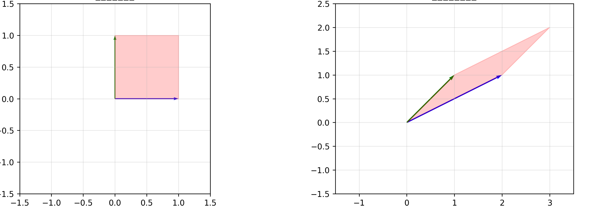
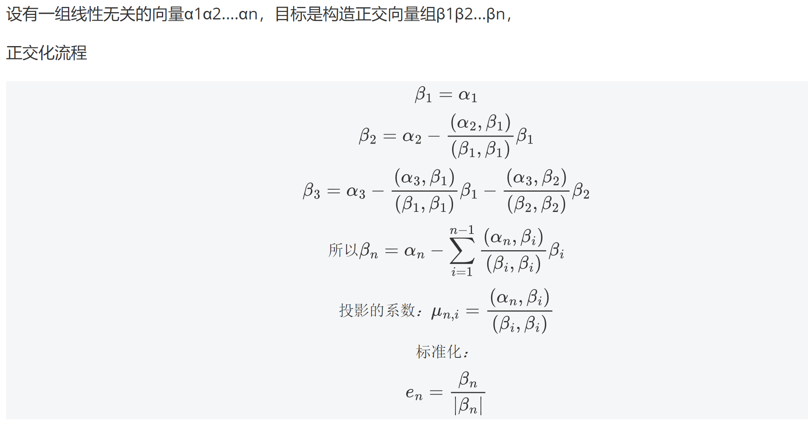
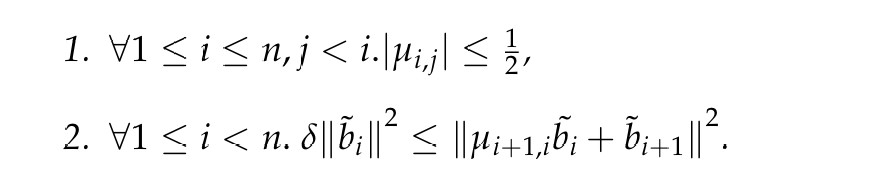
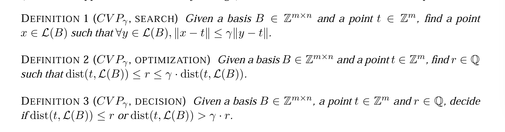
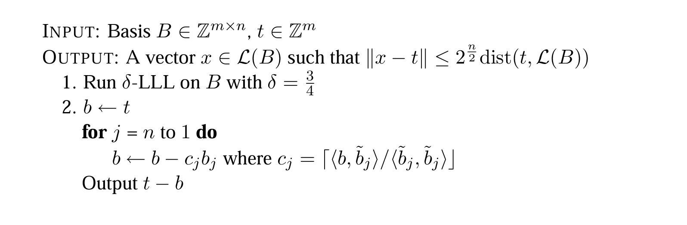

格密码学习笔记
记录一下学习 LLL 算法，以 Regev 的讲义为主加上网上搜的其他资料，主要是 LLL ==
LLL 算法
算法目的
用于解决最短向量问题的多项式时间复杂度算法，目的简单说就是将坏基转化为好基

好基：
- 向量短
- 接近正交（垂直）
坏基：
- 向量长
- 接近平行
LLL 约简基
Gram-Schmidt 正交化

进行 δ-LLL 约基简的条件

σ = 3/4，bi 线性无关向量，上面有个~的是正交化后的正交向量，μi, j 是 bi 在 bj（正交化） 上的投影系数
尺寸约减（条件一）
第 i 个原始基向量 bi 在前个正交化向量 bj 上的投影系数 ui, j 的绝对值不超过二分之一, 目的是为了让基向量更接近正交
Lovász 条件（条件二）
正交化的第 i 个模长的平方的 σ 倍小于右边，给第 i+1 个正交化的向量规定了下限
因为 ~ b i 和 ~ b(i+1) 都进行了正交化，所以内积等于 0，两者和的平方就可以看作两者平方之和，
由 条件一 可以得到 u 小于 1/2，所以 u² 应该小于 1/4，所以比较小，~bi+1 的平方加上这个比较小的数大于等于 σ 倍 ~bi 的平方，所以 限制 ~bi+1 的长度不能太短
SVP 问题
最短向量问题（SVP）：给定一个格 L，找到一个非零向量 v，使得对于格 L 中任意一个非零向量 u，都满足 ∥v∥≤∥u∥（即 v 是格中长度最短的非零向量）
近似CVP问题
cvp可定义搜索问题，优化问题和决策问题。

$$ (CVP_γ,搜索):在\mathcal{L}(B)里找一个点x，让x到t的距离，不超过格里其他点到t的距离的γ倍\\ (CVP_γ,优化):找一个数r，使得r属于最短距离和最短距离的γ倍之间\\ (CVP_γ,判断):给定一个数r，来判断最短距离 ≤ r|最短距离＞γ⋅r $$ 上面γ≥1为近似因子。当γ=1时，为精确cvp问题可以用babai算法解决CVP搜索问题，其中γ=2^n/2^

参考链接
LLL 格基约简算法（2） - 3cH0_Nu1L - 博客园
计算机科学中的格（2004 年秋季） — Lattices in Computer Science (Fall 2004)
评论